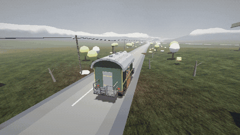
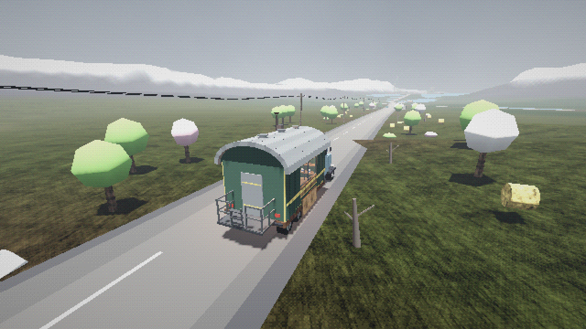
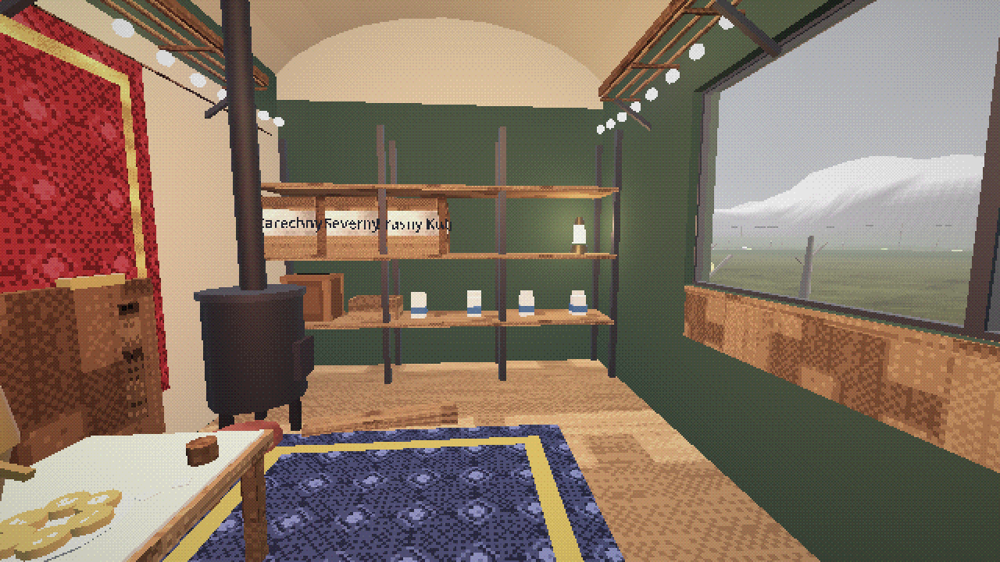
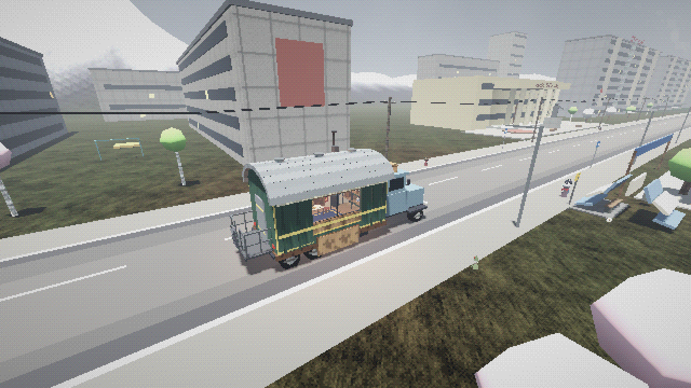
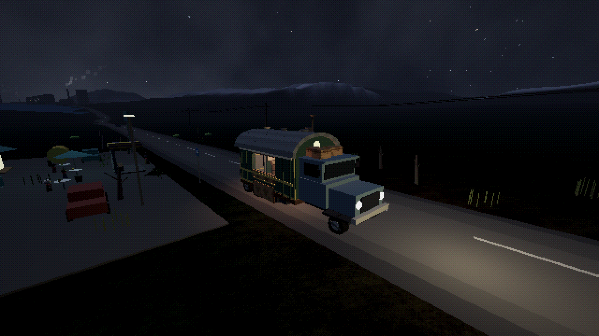
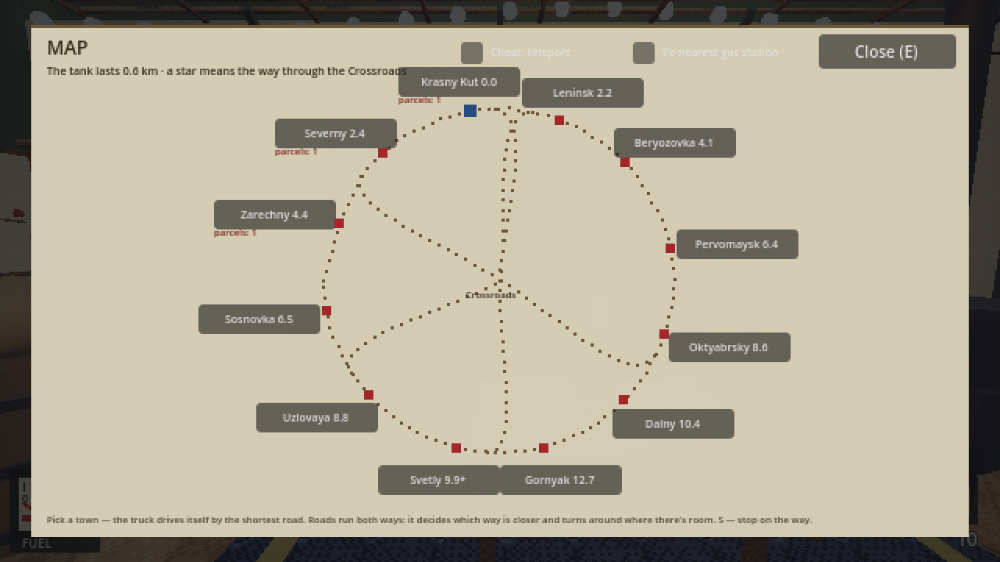

A cozy co-op road trip in a house on wheelsУютная дорога вдвоём в доме на колёсах
Cats drive a house-truck through twelve towns: deliver parcels, trade through the window, keep the stove warm and the samovar hot. Alone or with friends — right in the browser. Коты едут в доме-грузовике через двенадцать городов: возят посылки, торгуют через окно, топят буржуйку и пьют чай. Одному или с друзьями — прямо в браузере.
Free, no sign-up. Needs a desktop browser with keyboard and mouse; the first load is about 25 MB. English and Russian. Бесплатно, без регистрации. Нужен браузер на компьютере, клавиатура и мышь; первая загрузка — около 25 МБ. Русский и английский.

What you doЧем заняться
Ride togetherЕхать вместе
One player opens a lobby, friends join by a four-letter room code. Everyone shares the wagon and the wallet.Один открывает лобби, друзья заходят по коду из четырёх букв. Кибитка и кошелёк общие.
Trade through the windowТорговать через окно
Every town makes something and lacks something. Buy cheap, carry it down the road, ring the bell and sell.В каждом городе что-то делают и чего-то не хватает. Купи дёшево, довези, позвони в колокольчик и продай.
Parcels with storiesПосылки с историями
A jar of jam for a student son, a lamp for a lighthouse: deliver a parcel and hear what happened next.Варенье сыну-студенту, лампа для маяка: довези посылку и узнай, чем кончилось.
A home that livesОбжитой дом
Feed the stove, fry pancakes, roll dice at the tea table, play guitar at a bus stop, sleep till morning on the shelf.Топи буржуйку, пеки блины, бросай кости за чаем, играй на гитаре на остановке, спи на полке до утра.
Step outsideВыйти наружу
Markets, a shooting range, fishing, a mine, an observatory in the mountains — and a gnome hidden in every special place.Рынки, тир, рыбалка, шахта, обсерватория в горах — и гномик в каждом особом месте.
Written in Common LispНаписано на Common Lisp
Godot draws, Lisp decides. The game can be changed from a REPL while friends are playing — for all of them at once.Godot рисует, Lisp решает. Игру можно менять из REPL, пока друзья играют, — сразу у всех.
ScreenshotsСкриншоты





ReferencesРеференсы
Games this one looks up to: Outbound, Easy Delivery Co., Papers, Please, Slow Roads, Cat Mail Co., Cozy Caravan, and ШХД: ЗИМА (It's Winter) with the other ШХД games. No affiliation with any of them. Игры, на которые эта равняется: Outbound, Easy Delivery Co., Papers, Please, Slow Roads, Cat Mail Co., Cozy Caravan, «ШХД: ЗИМА» и другие игры ШХД. С их авторами проект не связан.
KeysКлавиши
| W A S D · Shift · Space | walk, run, jumpходить, бежать, прыгать |
| M | map: pick a town, the truck drives itselfкарта: выбери город, грузовик едет сам |
| Left mouseЛКМ | paws: take things and put them downлапы: взять и поставить вещь |
| E | everything else: window, bell, door, stove, sitвсё остальное: окно, колокольчик, дверь, печка, сесть |
| V · F · G | outside view, flashlight, guide bookвид снаружи, фонарик, путеводитель |
| F2 · Tab · Esc | lobby and language, who is aboard, pause and settingsлобби и язык, кто в кибитке, пауза и настройки |